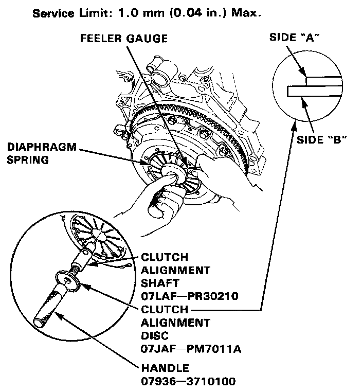
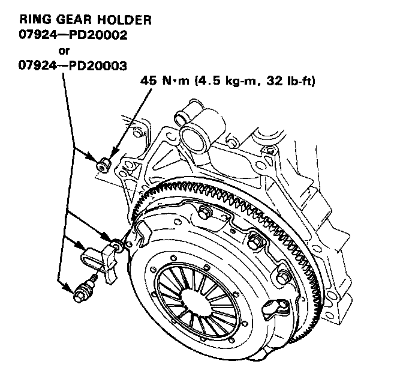
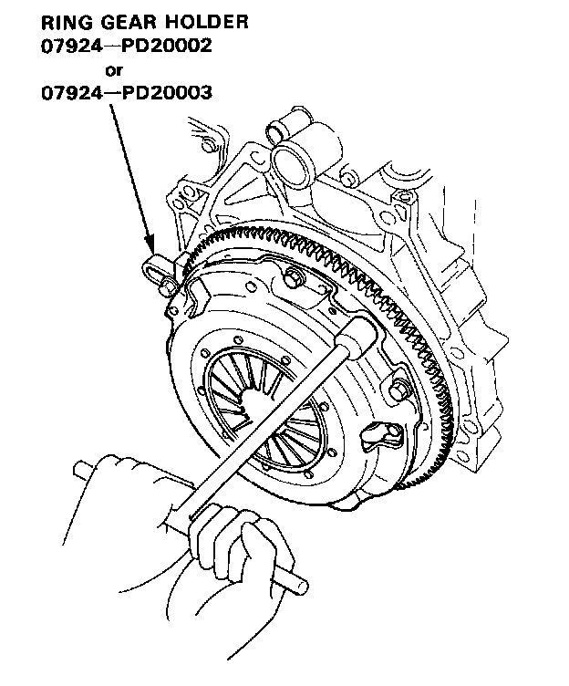
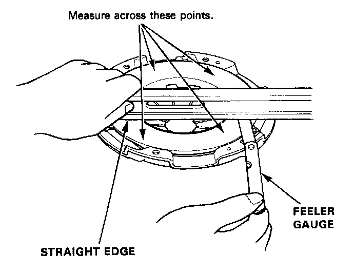

Pressure Plate: Service and Repair
Removal/Inspection1. Inspect the fingers of the diaphragm spring for wear at the release bearing contact area.
2. Assemble the special tools as shown.
NOTE: Assemble the Clutch Alignment Disc with side "A" facing the diaphragm as shown in image.

3. Check the diaphragm spring fingers for height using the special tools and a feeler gauge.

4. Install the special tool as shown.

5. To prevent warping, loosen the pressure plate mounting bolts two turns at a time in a crisscross pattern using a 10 mm wrench, then remove the pressure plate and clutch disc.
6. Inspect the pressure plate surface for wear, cracks, or burning.

7. Inspect for warpage using a straight edge and feeler gauge.
Service Limit: 0.15 mm (0.006 in.) Max.